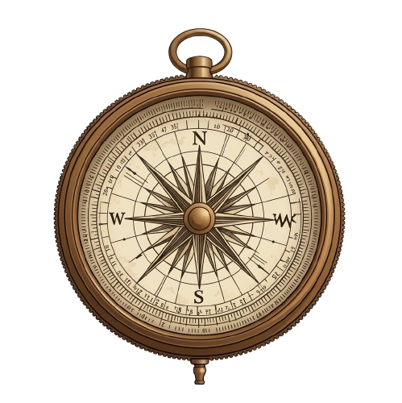
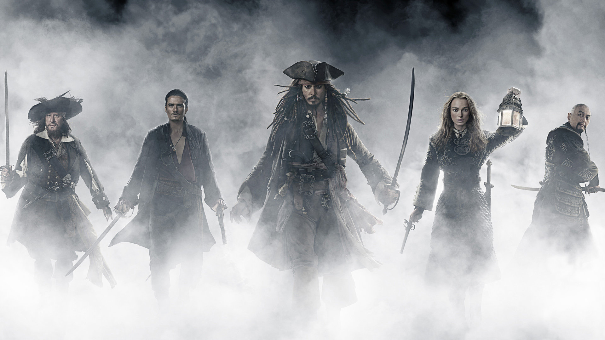
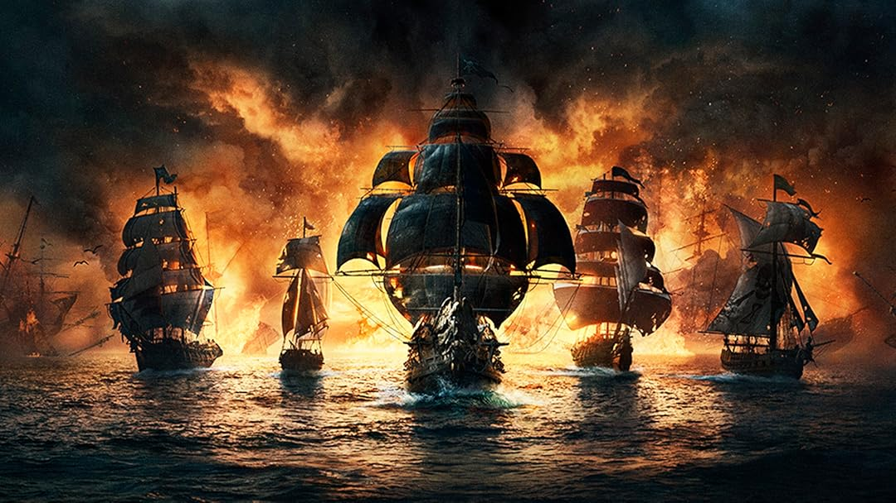
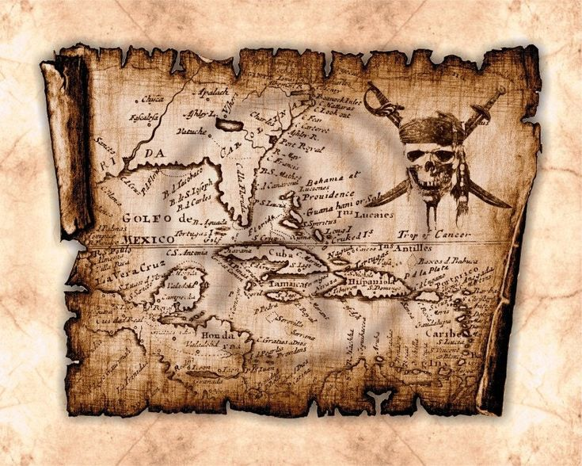

Live Event
Live Event
Kraken Hunt Week
Form your crew, track the beast through storm routes, and win rare relic rewards.

Charting the Seas...
Choose your fate upon the Seven Seas

The Lost Compass is not merely a place—it's a world where the impossible becomes reality. Where cursed treasures gleam in moonlit waters, and legendary captains command the seven seas.

Encounter legendary pirates like Jack Sparrow, Will Turner, and many more. Each with their own story, powers, and cursed connections.
Explore Characters →
Sail the seven seas aboard the Black Pearl, the Flying Dutchman, or Queen Anne's Revenge. Each ship holds dark secrets and ancient curses.
View Ships →
Embark on dangerous quests. Recover cursed coins, escape the Kraken, duel rival captains, and discover hidden wealth.
Accept Quest →Fresh whispers from the horizon. Follow what is rising in The Lost Compass this season.
Live Event
Form your crew, track the beast through storm routes, and win rare relic rewards.
 New Lore
New Lore
Unlocked scroll entries now reveal hidden links between cursed captains and lost islands.
 Community
Community
Featured crews and fan voyages are now pinned in the tavern hall each fortnight.

Master of misdirection and impossible escapes.

Cunning strategist with an eye on every horizon.

Relentless hunter haunting the Devil's Triangle.
"Not all treasure is silver and gold, mate."
"Do you fear death? Do you fear that dark abyss?"
"The problem is not the problem. The problem is your attitude about the problem."
"One day you will find yourself lost. You will have nothing and nowhere to go."
"The problem is I'm dishonest, and a dishonest woman you can always trust to be dishonest."
"Gentlemen, milady... you will always remember this as the day you almost caught Captain Jack Sparrow."